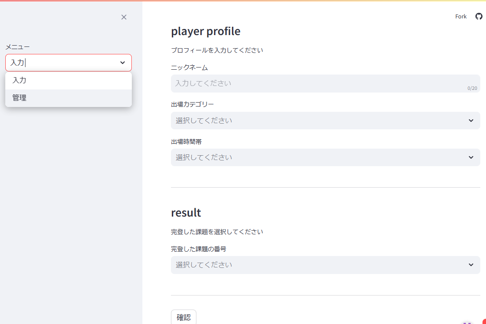

Product

コンペのリザルト入力と集計アプリ
・2024年6月作成（約1ヵ月）
・Python/ Streamlit/ SQLite/ VSCode/ Github
行きつけのクライミングジムのコンペのリザルト入力と集計が大変だったことをヒントに、登った課題をマルチセレクトで選択し、得点の自動計算とエクセルでの出力を可能にするWEBアプリを構想しました。
デプロイまでのハードルの低さからStreamlitとSQLiteで作成しました。